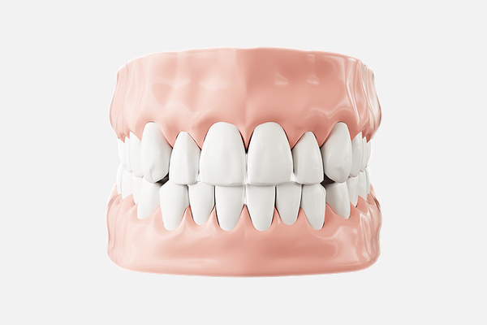

임플란트 치료후 구강관리
임플란트 치료 후 관리에 따라 임플란트의 수명에 차이가 날 수 있습니다. 임플란트는 충치의 위험은 없으나 구강 위생관리를 소홀히 하면 치주병이 생길 수 있습니다. 올바른 방법으로 구강위생관리를 하면 임플란트도 건강하게 오래 사용할 수 있습니다.
- 음식을 먹은 후와 잠자기 전에 올바른 방법으로 칫솔질합니다.
-
임플란트 표면이 손상되면 부식이 되기 쉽고,
흠집 속으로 치면세균막이 생기면 치주병이 생기기
쉬우므로 철저한 칫솔질이 중요합니다. - 치실이나 치간칫솔을 사용하여 임플란트를 닦습니다.
-
인공치아의 간격이 좁은 경우 치실을,
간격이 넓은 경우 치간 칫솔을 사용합니다. -
치간칫솔 와이어 부분이 금속으로 된 것은 임플란트에
손상을 줄 수 있으므로 코팅 되거나 플라스틱으로
제작된 것을 사용하는 것이 좋습니다. -
불편하지 않더라도 정기적으로 치과에서 검사,
치료 등을 받습니다. -
보철물의 손상을 막기 위해 오징어나 얼음처럼
질기거나 딱딱한 음식은 피하는 것이 좋습니다.